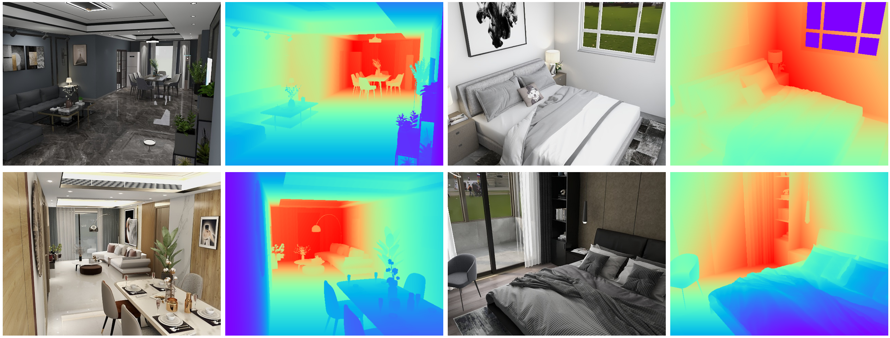

Depth Estimation
Introduction
Depth estimiation is an essential task in indoor scene understanding. We show the performance gain by generating dataset using our system.
Here we show the DSL for generating depth images which helps boosting the current depth estimation task. More details can be found in the paper and supplementary document.
DSL code
In this example, we generate cameras by rules and generate depth images.
In the Entity Process Stage, we manually setup cameras in the valid rooms as shown in class CameraSetter. Specifially, we set the position by a rule and set the resolution of the image to 640* 480 and horizontal field-of-view (FoV) to 57 to align with Microsoft Kinect used in the NYUv2 dataset.
In the Pixel Process Stage, we setup the depth output in class DepthOutput.
from ksecs.ECS.processors.entity_processor import EntityProcessor
from shapely.ops import nearest_points
from shapely.geometry import Point
import numpy as np
import math
class CameraSetter(EntityProcessor):
# Set a camera in the room by a heuristic rule
def set_camera(self, room):
width = 640
height = 480
# look from right corner of the room
camera_height = min(2000, self.shader.world.levels[0].height)
right_corner = np.max(room.boundary, axis=0)
room_polygon = room.gen_polygon()
border, point = nearest_points(room_polygon, Point(right_corner))
pos = [border.x - 200, border.y - 200, camera_height - 200]
# look at room center
look_at = room.position + [camera_height / 2]
hfov = 57
tan = (math.tan(math.radians(hfov / 2))) / (width / height)
vfov = math.degrees(math.atan(tan)) * 2
self.shader.world.add_camera(
id=f"view_{room.roomId}",
cameraType="PERSPECTIVE",
hfov=hfov,
vfov=vfov,
imageWidth=width,
imageHeight=height,
position=pos,
lookAt=look_at,
up=[0, 0, 1]
)
def is_valid_room(self, room, num_furniture=3):
# Check if the number of furniture in the room is above threshold.
polygon = room.gen_polygon()
count = 0
for ins in self.shader.world.instances:
if not ins.type == 'ASSET':
continue
if polygon.contains(Point([ins.transform[i] for i in [3, 7, 11]])):
count += 1
return count > num_furniture
def process(self):
# Delete all existing cameras
for camera in self.shader.world.cameras:
self.shader.world.delete_entity(camera)
# Set new camera for valid room
for room in self.shader.world.rooms:
if self.is_valid_room(room):
self.set_camera(room)
from ksecs.ECS.processors.render_processor import RenderProcessor
class Render(RenderProcessor):
def process(self, *args, **kwargs):
self.gen_rgb(distort=0, noise=0)
from ksecs.ECS.processors.pixel_processor import PixelProcessor
class DepthOutput(PixelProcessor):
def process(self, **kwargs):
self.gen_depth(distort=0, noise=0)
MINERVAS output samples
